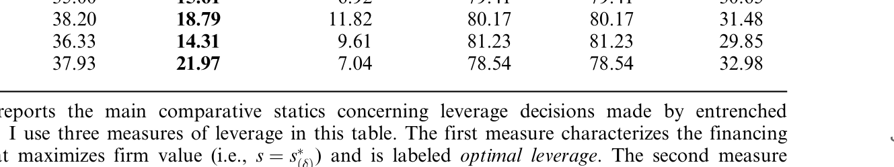
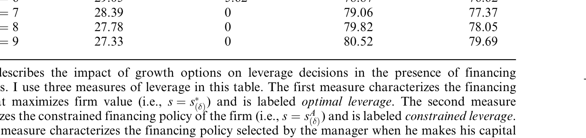
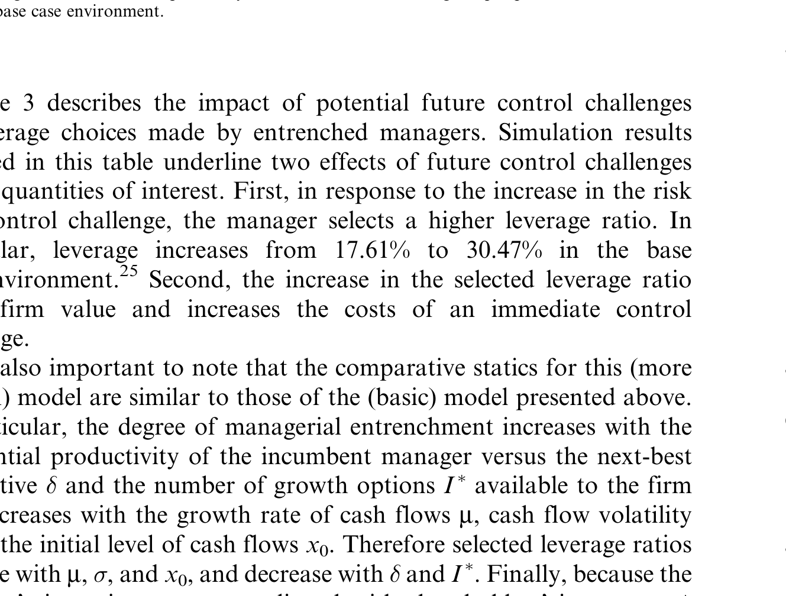
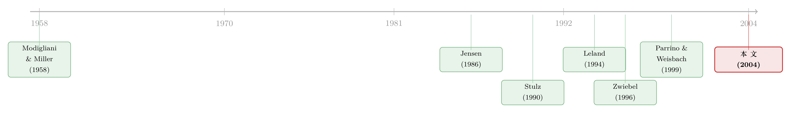

老板不想借钱，债却替他保住了位子——管理层自利如何解开「杠杆之谜」
本文读的是 Morellec (2004, Review of Financial Studies)：在一个把投资政策内生化的或有权益模型里，资本结构不再由「股东价值最大化」决定，而是由经理在「扩张帝国」与「保住位子」之间的拉锯决定。这个简单的转向，恰好能解释一件让结构模型尴尬了十年的事——为什么现实里的公司，债借得比模型预测的少得多。
1 一个尴尬的预测
先从一个让无数人头疼的「成功」说起。
自 Modigliani 和 Miller (1958) 之后，资本结构理论的版图越铺越大：税盾、破产成本、各类利益冲突，统统被装进了同一个框架。到了 1990 年代，或有权益 (contingent claims) 模型——以 Leland (1994)、Leland 和 Toft (1996)、Goldstein、Ju 和 Leland (2001) 为代表——把这套理论推到了能算出具体数字的高度：给定波动率、税率、破产成本，模型能吐出一个最优杠杆比率。
听上去很美。可问题恰恰出在这个「具体数字」上。
把现实里合理的参数代进去，这些模型算出来的杠杆，远高于我们在数据里看到的。换句话说，模型说公司「应该」借很多钱，可现实里的公司却借得相当克制。更糟的是，模型还复制不出资本结构的横截面差异——它解释不了为什么有的公司多债、有的公司少债。Graham (2000) 那句著名的判断——公司用债「太保守」(too conservatively)——说的就是这件事。
这是一个「方向反了」的谜：不是模型算不出杠杆，而是它算出来的杠杆系统性地偏高。当一个模型在自己最该擅长的地方持续高估，往往说明它漏掉了某个一阶的力量。
那么，它漏掉了什么？
2 一个反过来的问题
标准结构模型有一个不起眼、却致命的假设：公司的投资政策是给定的，资本结构是为了让公司价值最大化而选的。
可现实里，钱不是「公司」借的，是经理借的。而经理和股东，想要的并不是同一样东西。
这里要请出 Jensen (1986) 那个经久不衰的洞见：经理偏爱投资、偏爱把公司做大——哪怕项目是负 NPV 的，「帝国」本身就能给他带来私人收益。于是出现了自由现金流的代理成本 (agency costs of free cash flow)。Jensen 的药方是债：还本付息会把经理手里那笔「闲钱」抽走，逼他不去乱投。（关于这味药，可参见《现金为什么一定要「还」出去？——四十年后，重读 Jensen 的自由现金流》。）
但 Jensen 的逻辑里藏着一个分岔。债能管住经理——这没错。可问题是，谁来决定借多少债？
- 如果是股东说了算，那为了管住经理，股东可能愿意上更高的杠杆；
- 如果是经理说了算，而经理讨厌被债勒住脖子、又舍不得他那些成长期权，那他会借比最优更少的债。
Morellec 抓住的正是第二条。一个自然的问题于是浮现：如果我们老老实实承认「债是经理选的」，模型预测的杠杆会不会自动降下来，正好对上现实？
这就是全文的核心张力。接下来要做的，是把这句话翻译成一个能算的模型。
3 模型设定：一个会「扩张帝国」的经理
Morellec 构造了一家同时拥有在位资产 (assets in place) 和投资项目（成长期权）的公司。
在位资产。 资产产生的经营利润与一个状态变量 \(x_t\) 正相关。在位经理凭借专有的人力资本，能给资产「增值」，于是瞬时经营利润为
$$f_{(\delta)}(x_t)=\delta x_t-c,$$
其中 \(\delta-1\ge 0\) 是在位经理相对于「次优替代者」多创造的价值，\(c\ge 0\) 是包含经理固定工资 \(w\) 的每期固定成本。状态变量服从几何布朗运动
$$dx_t=\mu x_t\,dt+\sigma x_t\,dZ_t,\qquad x_0>0,$$
并假定 \(\mu $$f_{(1)}(x_t)=x_t-c.$$ 这个 \(\delta>1\) 是整篇文章的隐形主角：正因为在位经理「更值钱」，他才是部分壕沟化 (partially entrenched) 的，才有了对政策的自由裁量空间。 成长期权与过度投资。 这是模型最巧妙的一块积木，承袭自 Stulz (1990)。公司每单位时间有 \(I^*\) 个正 NPV 项目——\(I^*\) 越大，公司成长期权越多。投资的边际产出是一个阶梯函数： 关键假设来了：经理从投资本身获得私人效用，因此他愿意一路投到 \(J\)——也就是说，正 NPV 项目投完后，他还会继续投那些负 NPV 的项目。只有超过 \(J\) 的现金才会被吐给股东。这就把 Jensen 的「自由现金流」用一个干净的函数形式写了出来：经理的过度投资，恰恰对那些现金流充沛的公司（高 \(x_0\) 或高 \(\sigma\)）更严重。 经理的目标。 除了固定工资，经理还从「投资」和「保住控制权」两件事里获得效用，且这两块可加可分。直觉上，经理是个帝国建造者：他想多投、想留任。 现在我们可以把无杠杆公司的价值写出来。它等于「高效率的现金流 + 清算价值 − 过度投资的损耗」的风险中性期望： 第一、二项是「好经理」也会创造的价值；真正刻画代理问题的是第三项——它度量了经理的扩张冲动到底烧掉了多少钱。这一项，正是 Jensen 的自由现金流代理成本在连续时间里的样子。 现在引入债务：一笔永续息票 \(s\)，一旦违约即刻清算。 这里有一个看似技术、实则关键的设定——基于股权的违约 (stock-based default)：股东在股权价值归零时才违约，因此只要公司还有正的经济净值，股东就愿意继续往里注资。违约门槛由光滑粘合条件 (smooth-pasting condition) [见 Dumas (1991)] 决定： $$\left.\frac{\partial e^f_{(\delta)}(x,s)}{\partial x}\right|_{x=x^l_{(\delta)}}=0.$$ 为什么这一步重要？因为它意味着违约门槛 \(x^l_{(\delta)}\) 是内生的，会随成长期权而动。Morellec 的图 1 给出了一个反直觉的结果：在他的校准下（无风险利率 \(r=6\%\)、在位经理的差异化生产力 \(\delta-1=5\%\)、漂移 \(\mu=0.01\)、波动率 \(\sigma=25\%\)、固定成本 \(c=1\)、税收优势 \(\tau=15\%\)、清算成本 \(\alpha=25\%\)、\(H=1.1\)、\(L=0.9\)），违约门槛随成长期权数目 \(I^*\) 的增加而下降。原因是：成长期权越多，过度投资的潜在成本越小、而不足投资 (underinvestment) 的潜在成本越大，于是股东宁愿把违约往后拖。在标准模型里加杠杆只会抬高违约门槛，这里却被「杠杆对投资机会价值的正面作用」抵消了一部分。 接下来是全文的分水岭——要区分两种杠杆： 如果让经理自由选债，结果几乎是注定的：债会管住他的自由现金流、还会逼他在心爱的成长期权上不足投资，所以一个帝国建造者会借比最优更少的债。 到这里，谜底似乎已经揭开了一半：观察到的低杠杆，是因为经理不想借债。可故事如果到此为止，就太单薄了——它会推出一个荒谬的极端：经理一分债都不借。现实显然不是这样。 于是，真正关键的一步来了。 经理不想借债。但他也不能完全为所欲为——因为他头上悬着一把剑：控制权挑战 (control challenge)。 模型假设：经理的政策越偏离价值最大化，招来控制权挑战的概率就越高。而一旦挑战成功，专有人力资本随之消失（替代经理 \(\delta=1\)，且不会过度投资），在位者就丢了位子。 这把剑改变了一切。一个聪明的、想留任的经理会意识到：与其等着被人轰下台，不如主动借债，预先承诺 (precommit) 一个不会太离谱的投资政策——债的还本付息会替他绑住自己的手，让公司效率高到挑战者无利可图。于是债务从「经理避之不及的东西」，变成了「经理用来自保的工具」。 这正是 Jensen (1986) 的另一面，但 Morellec 把它内生了：债不是股东强加的紧箍咒，而是经理为了活下去自愿戴上的。（这与《举债，竟是为了「逼」别人把好钱让出来》、以及《借来的「紧箍咒」：当老板的控制权远超他的钱包》的精神是相通的。） 现在，把这两股力量摆在一起——扩张冲动把债往下压，控制权威胁把债往上顶——实际杠杆，就是这场拉锯的均衡点。 而决定这个均衡点落在哪里的，是成长期权的数目。逻辑链条是这样的：成长期权越多 → 现金被好项目吸收得越多、过度投资的成本越低 → 经理「浪费」得没那么离谱 → 招致控制权挑战的风险下降 → 用来吓退挑战者所需的债也就越少。 于是高成长公司用更少的债。 注意这个结论：它在表面上和经典的 Smith 和 Watts (1992)、Rajan 和 Zingales (1995) 的经验事实完全一致，但走的是一条全新的暗线。教科书把「高成长 → 低杠杆」归因于股东-债权人冲突（不足投资、资产替代）。可 Leland (1998) 发现资产替代下的最优杠杆反而更高，Parrino 和 Weisbach (1999) 也算出这些冲突「太小，解释不了横截面差异」。Morellec 的贡献，是用经理-股东冲突这条被定量研究长期忽视的线，重新讲通了同一个事实。 模型的全部预测，最终落在三张比较静态表上。 第一，壕沟化经理手里的杠杆。 表 1 给出在位经理自选杠杆时各参数的影响。核心信息是：当资本结构由经理决定，实际债务系统性地低于最大化公司价值的最优债务——empire-building 的力量把杠杆往下拽。这正是「低杠杆之谜」在模型里的直接体现。  Table 1: reports the main comparative statics concerning leverage decisions made by entrenched 第二，成长期权的作用。 表 2 把成长期权 \(I^*\) 推到不同水平（并考虑融资约束）。随着 \(I^*\) 上升，过度投资的成本下降，威慑挑战所需的债务随之走低——模型由此内生出「高成长、低杠杆」的横截面规律，而无需诉诸股东-债权人冲突。  Table 2: describes the impact of growth options on leverage decisions in the presence of financing 第三，未来控制权挑战的威胁。 表 3 刻画潜在的、未来才会发生的控制权挑战如何反过来塑造今天的融资决策。当挑战的威胁更可信时，经理有更强的动机提前加杠杆来自我约束——债务水平上移。这把「债是自愿承诺工具」这一机制量化了出来。  Table 3: describes the impact of potential future control challenges 把三张表连起来读，就是本文一句话的全部：实际杠杆 = 帝国建造冲动（压低债）与控制权威胁（顶高债）的均衡，而成长期权决定了这个均衡落在哪儿。 标准结构模型之所以高估杠杆，正是因为它默认股东说了算、且投资外生；一旦把决策权还给那个有私心、又怕丢位子的经理，模型预测的杠杆就自然降到了更接近现实的区间。 把这条线捋一捋，会看得更清楚。 最上游是 Modigliani 和 Miller (1958)——资本结构无关命题，逼着后人去找「到底什么让它有关」。接着是两条平行的代理支流：Jensen 和 Meckling (1976) 奠定代理成本框架，Myers (1977) 给出股东-债权人冲突下的不足投资，而 Jensen (1986) 则点出自由现金流这一经理-股东冲突的核心，并把债当成解药。 然后，Stulz (1990) 迈出关键一步：他用阶梯式边际产出把「过度/不足投资」装进了一个可解的金融政策模型——Morellec 的成长期权积木正是从这里搬来的。与此同时，Leland (1994) 开创了能算出具体杠杆数字的或有权益结构模型，却也带来了「杠杆偏高」的尴尬。Zwiebel (1996) 则在另一条路上把「管理层壕沟 + 控制权威胁」写成了动态资本结构的驱动力。  到了世纪之交，争论白热化：Leland (1998) 与 Parrino 和 Weisbach (1999) 几乎一致地判定，股东-债权人冲突「太小」，撑不起观测到的横截面差异。本文 Morellec (2004) 正好站在这个十字路口——它接过 Stulz 的投资积木、Leland 的或有权益机器、Jensen 与 Zwiebel 的代理与控制权视角，把「经理-股东冲突」这条被定量文献冷落的线，焊成了一个能同时解释低杠杆与横截面差异的统一模型。 Q：这和 Jensen (1986) 的自由现金流假说，到底有什么不一样？ Jensen 是定性的、且默认「债能管住经理、所以该上债」。Morellec 把决策权交还给经理后，得到一个反转：经理本身讨厌债（债勒住他的帝国），只有在控制权威胁下才自愿借债。于是同一个机制既能压低杠杆、又能在威胁下抬高杠杆——这是 Jensen 框架里看不到的张力。 Q：「高成长 → 低杠杆」不是早就有了吗？本文新在哪？ 经验事实是老的（Smith-Watts、Rajan-Zingales），但主流解释走的是股东-债权人冲突（不足投资）那条线，而 Leland (1998)、Parrino-Weisbach (1999) 恰恰证明那条线「力量不够」。本文的新意是用经理-股东冲突 + 控制权威胁重新推出同一事实，给一个被定量研究判过「死刑」的渠道翻了案。 Q：把违约设成「股权价值归零」(stock-based default)，是不是太巧了？ 这是结构模型的标准做法，好处是违约门槛由光滑粘合条件内生决定、会随成长期权而动（图 1）。代价是它假定股东只要净值为正就持续注资、且经理没有「深口袋」。换一种基于现金流的违约定义，定量结论可能松动，但「经理压低杠杆」的定性方向应当稳健。 Q：模型里债务是永续、不可重新谈判的，这会不会过度简化？ 会。Fan 和 Sundaresan (2000)、François 和 Morellec (2002) 都表明，允许违约时重新谈判会显著改变证券估值与杠杆选择。本文为了让「投资政策内生」这块保持可解，牺牲了债务动态——这是一个清楚的、有意识的取舍。 Q：「控制权挑战的概率随偏离价值最大化而上升」——这个机制是不是塞进去的（reduced-form）？ 是约简式的。模型没有显式建模一个收购方的最优出价博弈，而是直接假定「越浪费越容易被挑战」。这让模型可解，但也意味着控制权市场的微观结构（如反收购条款、股权集中度）只能通过这个约简参数间接进入。把它显式化，正是后续可做的方向。 Q：这是个纯理论模型，怎么说它「解释了」观测到的杠杆？ 严格说，本文做的是校准 (calibration)，不是估计：用一组合理参数证明模型能产生现实区间的低杠杆与横截面差异，而非用数据结构化估计出代理成本。所以它的说服力在「机制可行性」，而不在「点估计」。把它拿去结构估计，是一个明显的待办。 1. 把「经理自利渠道」搬进公司债定价 【经济故事】既然经理的扩张冲动会内生地压低杠杆、又会在控制权威胁下抬高它，那么债券持有人面对的违约风险，其实部分取决于「这位经理有多怕丢位子」。治理越弱（壕沟越深）的公司，债务作为承诺工具的价值越高，信用利差里也许藏着一块「治理溢价」。
【可行性】中。需要把公司治理指标（如 E-index、机构持股、双层股权）与公司债二级市场利差（TRACE）匹配，识别上可借并购法、反收购法的外生变动。难点是把「控制权威胁」量化成一个可信的外生冲击。 2. 外资持有人会不会改变这场拉锯？ 【经济故事】外资机构往往是更主动的监督者，也可能加剧控制权威胁。按本文逻辑，外资持股上升 → 控制权约束变紧 → 经理被迫上更高杠杆来自保。这给「外资 → 杠杆」提供了一条全新的代理渠道预测。
【可行性】中高。可用各国「可投资度 (investability)」改革或指数纳入作为外资准入的外生冲击，做双重差分 (difference-in-differences, DiD)，看公司杠杆与投资效率的反应。数据上 Worldscope/FactSet 可得，识别相对干净。 3. 成长期权、过度投资与债务期限的联合选择 【经济故事】本文只讨论了「借多少」，没碰「借多久」。但短债的滚动续作本身就是一种更强的承诺工具——它比永续债更频繁地把经理拽回市场受审。高成长公司若既要低杠杆、又要约束自利，会不会转而用短债来替代？
【可行性】高。债务期限数据（Compustat）齐全，Johnson (2002) 已有「成长期权 → 短债」的实证基础，可在其上叠加治理变量做交互检验。 4. 控制权市场活跃度作为杠杆的时间序列驱动 【经济故事】如果债是用来吓退挑战者的，那么当并购市场整体降温（控制权威胁变弱）时，经理应当趁机去杠杆、放纵自己的扩张。这能为「杠杆的时间趋势」提供一个代理视角的解释。
【可行性】中。需要一个外生的「控制权威胁强度」时序——例如各州反收购立法的交错通过（Garvey 和 Hanka (1999) 用过），结合交错 DiD 的稳健做法谨慎识别。 这篇文章最漂亮的地方，是它用一个转向解决了两个问题：把「谁选债」从股东换成有私心、又怕丢位子的经理，就同时压低了模型的杠杆预测、并复制出了横截面差异——而且走的不是被 Parrino-Weisbach 判过「无力」的老渠道。它把 Jensen 的口号、Stulz 的积木、Leland 的机器和 Zwiebel 的控制权视角，焊成了一个自洽、可解、可校准的整体，这种综合本身就是贡献。 我的保留有三点。其一，识别其实是校准而非估计：文章证明了机制「能」产生现实数字，但没有用数据把代理成本的大小结构化地估出来，因此它对「经理自利到底贡献了多少」这个量级问题保持沉默。其二，控制权威胁是约简式的——「越偏离价值最大化越容易被挑战」被直接假定，而非从一个显式的收购博弈里推出来，这让所有关于治理的可比较静态都依赖这一个未被微观化的参数。其三，债务被设成永续且不可谈判，与同期重新谈判文献（Fan-Sundaresan 2000）的结论存在张力。 后续我最想看到的，是把这个模型结构化估计到一个真实样本上：用治理指标和控制权市场的外生变动，去识别「empire-building 把杠杆往下压了多少、控制权威胁又顶回去多少」。如果这两股力量的相对强弱能被数据钉下来，那本文从一个「优雅的可能性」就升级成了一个「可证伪的解释」。在我看来，这才是把代理理论从黑板真正搬进资本结构数据的那一步。
4 债务登场：经理为什么不想要它
5 反转：是「保住位子」逼他借了债
6 主要结果：把拉锯写成比较静态
7 文献脉络
8 评论与延伸（Q&A + 研究方向）
(a) 几个可能的疑问
(b) 几个可能的研究问题与提案
我的判断
参考文献